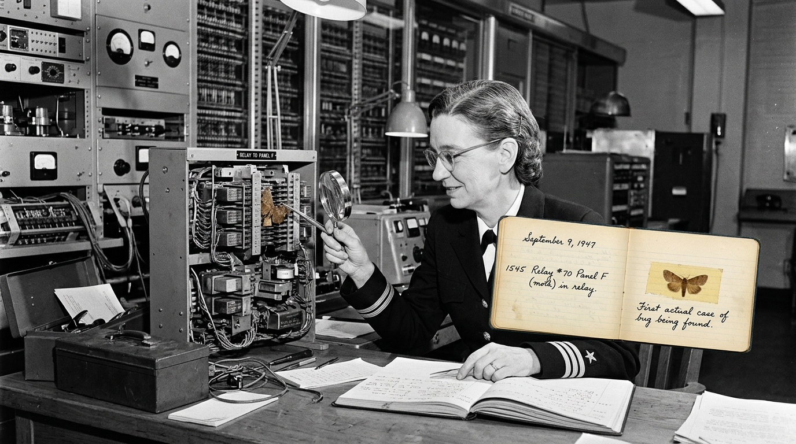
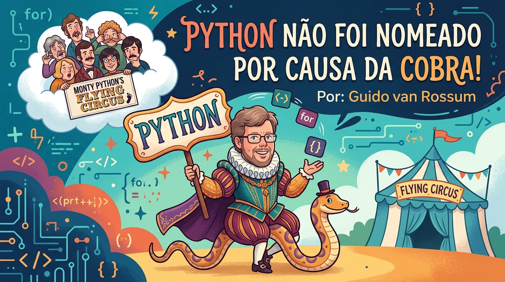
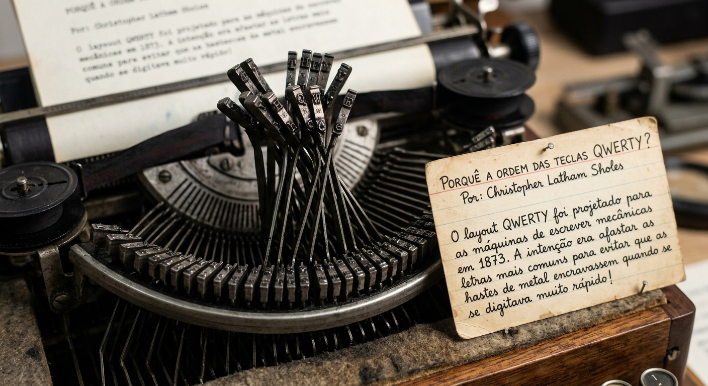

Meu primeiro post
Por: Camila Maciel Henrique
Boas-vindas ao meu primeiro blog! Aqui vou compartilhar dicas de programação e curiosidades da área de tecnologia!
Vou compartilhar conhecimento sobre tecnologia e programação
Por: Camila Maciel Henrique
Boas-vindas ao meu primeiro blog! Aqui vou compartilhar dicas de programação e curiosidades da área de tecnologia!

Por: Grace Hopper
Em 1947, a informática Grace Hopper encontrou uma traça presa num relé do computador Harvard Mark II. Ela colou o inseto no diário de bordo e escreveu "Primeiro caso real de bug encontrado".

Por: Guido van Rossum
O criador da linguagem, Guido van Rossum, escolheu o nome em homenagem ao grupo de comédia britânico Monty Python’s Flying Circus, do qual era fã.

Por: Christopher Latham Sholes
O layout QWERTY foi projetado para as máquinas de escrever mecânicas em 1873. A intenção era afastar as letras mais comuns para evitar que as hastes de metal encravassem quando se digitava muito rápido!